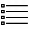

HTML Cheat Sheet
History
HTML (Hypertext Markup Language) has come a long way since Tim Berners-Lee invented it back in 1991

HTML5
Today HTML5 is the standard version and it's supported by all modern web browsers.

HTML Cheat Sheet
HTML cheat sheet gives you a full list of all the HTML elements, including descriptions, code examples and live previews. Simply scroll down to browse all HTML tag
| LIST OF TAG IN HTML | ||||||
|---|---|---|---|---|---|---|
| Tag | Descriptions | Syntax | ||||
| HTML TAG | Specifies an html document. The HTML <html> element (or HTML root element) represents the root of an HTML document.All other elements must be descendants of this element. | <html> </htmL> | ||||
| BASE TAG | Specifies URL which non-absolute URLs are relative to. The HTML <base> element specifies the base URL to use for all relative URLs contained within a document. There can be only one <base> element in a document. | <base> | ||||
| HEAD TAG | First element of the HTML document. Collection of metadata for the Document. The HTML <head> element provides general information (metadata) about the document, including its title and links to its scripts and style sheets. | <head> </head> | ||||
| LINK TAG | Other resources related to the document. The HTML &llink> element specifies relationships between the current document and an external resource. Possible uses for this element include defining a relational framework for navigation. This Element is most used to link to style sheets. | <link> | ||||
| META TAG | Document metadata that can't be expressed with other elements.
The HTML
element represents any metadata information
that cannot be represented by one of the other HTML meta-related
elements (<base>, <link>, <script>, <style> or <title>). |
<meta> | ||||
| STҮLE TAG | Embed style information in the documents. The HTML <style> element contains style information for a document, or part of a document. By default, the style instructions written inside that element are expected to be CSS. | <style> </style> | ||||
| TITLE TAG | Document title or name. The HTML <title> element defines the title of the document, shown in a browser's title bar or on the page's tab. It can only contain text, and any contained tags are ignored. | <title> </title> | ||||
| ADDRESS TAG | The HTML <address> element supplies contact information for its nearest <article> or <body> ancestor; in the latter case, it applies to the whole document. | <address> </address> | ||||
| ARTICLE TAG | Section of the page content, such as a blog or forum post. The HTML <article> element represents a self-contained composition in a document, page, application, or site, which is intended to be independently distributable or reusable (e.g., in syndication). | <article> </article> | ||||
| ASIDE TAG | Content related to surrounding elements that doesn't belong inline, such as a advertising or quotes. The HTML <aside> element represents a section of the page with content connected tangentially to the rest, which could be considered separate from that content. These sections are often represented as sidebars or inserts. | <aside> </aside> | ||||
| FOOTER TAG | Footer of the current section. The HTML <footer> element represents a footer for its nearest sectioning content or sectioning root element. A footer typically contains information about the author of the section, copyright data or links to related documents. | <footer> </footer> | ||||
| H1 to H6 TAG | Heading for the current section. Heading elements implement six levels of document headings, <h1> is the most important and <h6> is the least. A heading element breifly describes the topic of the section it introduces. | <h1> </h1> ... <h6> </h6> | ||||
| HEADER TAG | Navigation or introductory elements for the current section. The HTML <header> element represents a group of introductory or navigational aids. It may contain some heading elements but also other elements like a logo, wrapped section's header, a search form, and so on. | <header> </header> | ||||
| HGROUP TAG | The HTML <hgroup> Element (HTML Headings Group Element) represents the heading of a section. It defines a single title that participates in the outline of the document as the heading of the implicit or explicit section that it belongs to. | <hgroup> </hgroup> | ||||
| NAV TAG | A section of a page that links to other pages. The HTML <nav> element (HTML Navigation Element) represents a section of a page that links to other pages or to parts within the page: a section with navigation links. | <nav> </nav> | ||||
| SECTION TAG | Contains of elements grouped by theme, for example a chapter or tab box. The HTML <section> element represents a generic section of a document, i.e., a thematic grouping of content, typically with a heading. Each <section> should be identified, typically by including a heading (<h1> - <h1> element) as a child of the <section> element. | <section> </section> | ||||
| BLOCKQUOTE TAG | The HTML <blockqoute> Element (or HTML Block Quotation Element) indicates that the enclosed text is an extended quotation. Usually, this is rendered visually by indentation (see Notes for how to change it). A URL for the source of the quotation may be given using the cite attribute, while a text representation of the source can be given using the <blockqoute> element. | <blockqoute> </blockqoute> | ||||
| BR TAG | Line break. The HTML element line break <br> produces a line break in text (carriage-return). It is useful for writing a poem or an address, where the division of lines is significant. Do not use <br> to increase the gap between lines of text; use the CSS margin property or the <p> element. | <br> | ||||
| DD TAG | Description, definition, or value, part of a term- description group in a description list. The HTML <dd> element (HTML Description Element) indicates the description of a term in a description list (<dl>) element. This element can occur only as a child element of a description list and it must follow a <dt> element. | <dd> | ||||
| DIV TAG | Container or section with no semantic meaning. The HTML <div> element (or HTML Document Division Element) is the generic container for flow content, which does not inherently represent anything. It can be used to group elements for styling purposes (using the class or id attributes), or because they share attribute values, such as lang. It should be used only when no other semantic element (such as <article> or <nav>) is appropriate. | <div> </div> | ||||
| DL TAG | An association list consisting of zero or more name-value groups (a description list). The HTML <dl> element (or HTML Description List Element) encloses a list of pairs of terms and descriptions. Common uses for this element are to implement a glossary or to display metadata (a list of key-value pairs). Prior to HTML5, <dl> was known as a Definition List. | <dl> </dl> | ||||
| DT TAG | Term, or name, part of a term-description group in a description list. The HTML <dt> element (or HTML Definition Term Element) identifies a term in a definition list. This element can occur only as a child element of a <dl>. It is usually followed by a <dd> element; however, multiple <dt> elements in a row indicate several terms that are all defined by the immediate next <dd> element. | <dt> </dt> | ||||
| FIGCAPTION TAG | Caption or legend for the figure element. The HTML <figcaption> element represents a caption or a legend associated with a figure or an illustration described by the rest of the data of the <figure> element which is its immediate ancestor which means <figcaption> can be the first or last element inside a <figure> block. Also, the HTML Figcaption Element is optional; if not provided, then the parent figure element will have no caption. | <figcaption> </figcaption> | ||||
| FIGURE TAG | Contains elements related to single concept, such as an illustration or code example. The HTML <figure> element represents selfcontained content, frequently with a caption (<figcaption>), and is typically referenced as a single unit. While it is related to the main flow, its position is independent of the main flow. Usually this is an image, an illustration, a diagram, a code snippet, or a schema that is referenced in the main text, but that can be moved to another page or to an appendix without affecting the main flow. | <figure> </figure> | ||||
| HR TAG | Paragraph-level thematic break. The HTML <hr> element represents a thematic break between paragraph-level elements (for example, a change of scene in a story, or a shift of topic with a section). In previous versions of HTML, it represented a horizontal rule. It may still be displayed as a horizontal rule in visual browsers, but is now defined in semantic terms, rather than presentational terms. | <hr> | ||||
| LI TAG | List item. The HTML <li> element (or HTML List Item Element) is used to represent an item in a list. It must be contained in a parent element: an ordered list (<ol>), an unordered list (<ul>), or a menu (<menu>). In menus and unordered lists, list items are usually displayed using bullet points. In ordered lists, they are usually displayed with an ascending counter on the left, such as a number or letter | <li> | ||||
| MAIN TAG | Specifies the main content area of an HTML document. The HTML <main> element represents the main content of the <body> of a document or application. The main content area consists of content that is directly related to, or expands upon the central topic of a document or the central functionality of an application. This content should be unique to the document, excluding any content that is repeated across a set of documents such as sidebars, navigation links, copyright information, site logos, and search forms (unless the document's main function is as a search form). | <main> </main> | ||||
| OL TAG | Ordered list. The HTML <ol> Element (or HTML Ordered List Element) represents an ordered list of items. Typically, ordered-list items are displayed with a preceding numbering, which can be of any form, like numerals, letters or Romans numerals or even simple bullets. This numbered style is not deတဠned in the HTML description of the page, but in its associated CSS, using the list-style-type property. There is no limitation to the depth and overlap of lists deတဠned with the <ol> and <ul> elements. | <ol> </ol> | ||||
| P TAG | Paragraph content. The HTML <p> element (or HTML Paragraph Element) represents a paragraph of text. Paragraphs are usually represented in visual media as blocks of text that are separated from adjacent blocks by vertical blank space and/or first-line indentation. Paragraphs are block-level elements. | <p> </p> | ||||
| PRE TAG | A block of preformatted text. The HTML <pre> element (or HTML Preformatted Text) represents preformatted text. Text within this element is typically displayed in a non-proportional ("monospace") font exactly as it is laid out in the file. Whitespace inside this element is displayed as typed. | <pre> </pre> | ||||
| UL TAG | Unordered list. The HTML <ul> element (or HTML Unordered List Element) represents an unordered list of items, namely a collection of items that do not have a numerical ordering, and their order in the list is meaningless. Typically, unordered-list items are displayed with a bullet, which can be of several forms, like a dot, a circle or a squared. The bullet style is not defined in the HTML description of the page, but in its associated CSS, using the list-style-type property. | <ul> </ul> | ||||
| A TAG | Hyperlink (a hypertext anchor). The HTML Anchor Element (<a> tag) defines a hyperlink to a location on the same page or any other page on the Web. It can also be used (in an obsolete way) to create an anchor point - a destination for hyperlinks within the content of a page, so that links aren't limited to connecting simply to the top of a page. | <a> | ||||
| ABBR TAG | Abbreviation or acronym. The <abbr> element (or HTML Abbreviation Element) represents an abbreviation and optionally provides a full description for it. If present, the title attribute must contain this full description and nothing else. | <abbr> </abbr> | ||||
| B TAG | Stylistically separated text of equal importance, such as a product name. The HTML <b> Element represents a span of text stylistically different from normal text, without conveying any special importance or relevance. It is typically used for keywords in a summary, product names in a review, or other spans of text whose typical presentation would be boldfaced. Another example of its use is to mark the lead sentence of each paragraph of an article. | <b> </b> | ||||
| BDI TAG | Defines directional formatting for content. The HTML <bdi> Element (or Bi-Directional Isolation Element) isolates a span of text that might be formatted in a different direction from other text outside it. | <bdi> </bdi> | ||||
| BDO TAG | Defines directional formatting for content. The HTML <bdo> Element (or HTML bidirectional override element) is used to override the current directionality of text. It causes the directionality of the characters to be ignored in favor of the speciတဠed directionality. | <bdo> </bdo> | ||||
| CODE TAG | Fragment of computer code. The HTML Code Element (<code>) represents a fragment of computer code. By default, it is displayed in the browser's default monospace font. | <code> </code> | ||||
| DEL TAG | Text that has been removed during document editing. The HTML Deleted Text Element (<del>) represents a range of text that has been deleted from a document. This element is often (but need not be) rendered with strike-through text. | <del> </del> | ||||
| DFN TAG | Define instance of a term. The HTML Definition Element (<dfn>) represents the defining instance of a te | <dfn> </dfn> | ||||
| I TAG | Text in a alternate voice or mood, such as a technical term. The HTML <i> Element represents a range of text that is set off from the normal text for some reason, for example, technical terms, foreign language phrases, or တဠctional character thoughts. It is typically displayed in italic type. | <i> </i> | ||||
| INS TAG | Text that has been inserted during document editing. The HTML <ins> Element (or HTML Inserted Text) HTML represents a range of text that has been added to a document. | <ins> </ins> | ||||
| KBD TAG | Example input (usually keyboard) for a program. The HTML Keyboard Input Element (<kbd>) represents user input and produces an inline element displayed in the browser's default monospace font. | <kbd> </kbd> | ||||
| MARK TAG | Text highlighted for referencing elsewhere. The HTML Mark Element (<mark>) represents highlighted text, i.e., a run of text marked for reference purpose, due to its relevance in a particular context. For example it can be used in a page showing search results to highlight every instance of the searched-for word. | <mark> </mark> | ||||
| Q TAG | Phrasing content quoted from another source. The HTML Quote Element (<q>) indicates that the enclosed text is a short inline quotation. This element is intended for short quotations that don't require paragraph breaks; for long quotations use <blockqoute> element. | <q> </q> | ||||
| RP TAG | Contains semantically meaningless markup for browsers that don't understand ruby annotations. The HTML <rp> element is used to provide fall-back parenthesis for browsers non-supporting ruby annotations. Ruby annotations are for showing pronunciation of East Asian characters, like using Japanese furigana or Taiwainese bopomofo characters. The | <rp> </rp> | ||||
| RT TAG | Annotation of preceding text. The HTML <rt> Element embraces pronunciation of characters presented in a ruby annotations, which are used to describe the pronunciation of East Asian characters. This element is always used inside a element. | <rt> </rt> | ||||
| RUBY TAG | Contains text with annotations, such as pronunciation hints. Commonly used in East Asian text. The HTML <ruby> Element represents a ruby annotation. Ruby annotations are for showing pronunciation of East Asian characters. | <ruby> </ruby> | ||||
| S TAG | Strikethrough text that is outdated or no longer accurate. The HTML Strikethrough Element (<s>) renders text with a strikethrough, or a line through it. Use the <s> element to represent things that are no longer relevant or no longer accurate. However, <s> is not appropriate when indicating document edits; for that, use the <del> and <ins> elements, as appropriate. | <s> </s> | ||||
| SAMP TAG | Sample output of a program. The HTML <samp> element is an element intended to identify sample output from a computer program. It is usually displayed in the browser's default monotype font (such as Lucida Console). | <samp> </samp> | ||||
| SMALL TAG | Small text, such as fine print. The HTML Small Element (<small>) makes the text font size one size smaller (for example, from large to medium, or from small to x-small) down to the browser's minimum font size. In HTML5, this element is repurposed to represent sidecomments and small print, including copyright and legal text, independent of its styled presentation. | <small> </small> | ||||
| SPAN TAG | Container with no semantic meaning. The HTML <span> element is a generic inline container for phrasing content, which does not inherently represent anything. It can be used to group elements for styling purposes (using the class or id attributes), or because they share attribute values, such as lang. It should be used only when no other semantic element is appropriate. | <span> </span> | ||||
| STRONG TAG | Text that is important. The HTML Strong Element (<strong>) gives text strong importance, and is typically displayed in bold. | <strong> </strong> | ||||
| SUB TAG | Subscript text. The HTML Subscript Element (ltsub>) defines a span of text that should be displayed, for typographic reasons, lower, and often smaller, than the main span of text. | <sub> </sub> | ||||
| SUP TAG | Superscript text. The HTML Superscript Element (<sup>) defines a span of text that should be displayed, for typographic reasons, higher, and often smaller, than the main span of text. | <sup> </sup> | ||||
| TIME TAG | Time defines in a machine readable format. The HTML <time> element represents either a time on a 24-hour clock or a precise date in the Gregorian calendar (with optional time and timezone information). | <time> </time> | ||||
| VAR TAG | Mathematical or programming variable. The HTML Variable Element (<var>) represents a variable in a mathematical expression or a programming context. | <var> </var> | ||||
| WBR TAG | Opportunity for a line break. The HTML element word break opportunity <wbr> represents a position within text where the browser may optionally break a line, though its line-breaking rules would not otherwise create a break at that location. | <wbr> | ||||
| CAPTION TAG | Title of a table. The HTML <caption> Element (or HTML Table Caption Element) represents the title of a table. Though it is always the first descendant of a <table>, its styling, using CSS, may place it elsewhere, relative to the table. | <caption> <caption> | ||||
| COL TAG | Columns in a table. The HTML Table Column Element (<col>) defines a column within a table and is used for defining common semantics on all common cells. It is generally found within a <colgroup> element. | <col> | ||||
| COLGROUP TAG | Defines a group of columns in a table. The HTML Table Column Group Element (<colgroup>) defines a group of columns within a table. | <colgroup> </colgroup> | ||||
| TABLE TAG | Table of multi-dimensional data. The HTML Table Element (<table>) represents tabular data: information expressed via two dimensions or more. | <table> </table> | ||||
| TBODҮ TAG | Contains rows that hold the table's data. The HTML Table Body Element (<tbody>) defines one or more <tr> element data-rows to be the body of its parent <table> element (as long as no <tr> elements are immediate children of that table element.) In conjunction with a preceding <thead> and/or <tfoot> element, <tbody> provides additional semantic information for devices such as printers and displays. | <tbody> </tbody> | ||||
| TD TAG | Table cell. The Table cell HTML element (<td>) defines a cell of a table that contains data. It participates in the table model. | <td> </td> | ||||
| TFOOT TAG | Contains rows with summary of data. The HTML Table Foot Element (<tfoot>) define a set of rows summarizing the columns of the table. | <tfoot> </tfoot> | ||||
| TH TAG | Table heading. The HTML element table header cell <th> defines a cell as a header for a group of cells of a table. The group of cells that the header refers to is deတဠned by the scope and headers attribute. | <th> </th> | ||||
| THEAD TAG | Contains rows with table headings. The HTML Table Head Element (<thead>) deတဠnes a set of rows deတဠning the head of the columns of the table. | <thead> </thead> | ||||
| TR TAG | A row of cells in a table. The HTML element table row <tr> defines a row of cells in a table. Those can be a mix of <td> and <th> elements. | <tr> </tr> | ||||
| BUTTON TAG | A button. The HTML <button> Element represents a clickable button. | <button> </button> | ||||
| DATA TAG | Allows for machine-readable data to be provided. The HTML <data> Element links a given content with a machine-readable translation. If the content is time- or date-related, the <time> must be used. | <data> </data> | ||||
| DATALIST TAG | Defines sets of options. The HTML Datalist Element (<datalist>) contains a set of <option> elements that represent the values available for other controls. | <datalist> </datalist> | ||||
| FIELDSET TAG | Set of form controls grouped by theme. The HTML <fieldset> element is used to group several controls as well as labels (<label>) within aweb form. | <fieldset> </fieldste> | ||||
| FORM TAG | Used to create an HTML form for user input. The HTML <form> element represents a document section that contains interactive controls to submit information to a web server. It is possible to use the :valid and :invalid CSS pseudo-classes to style a <form> element. | <form> </form> | ||||
| INPUT TAG | Generic form input. The HTML element <input> is used to create interactive controls for web-based forms in order to accept data from the user. How an <input> works varies considerably depending on the value of its type attribute. | <input> </input> | ||||
| LABEL TAG | Caption for a form control. The HTML Label Element (<label>) represents a caption for an item in a user interface. It can be associated with a control either by placing the control element inside the <label> element, or by using the for attribute. | <label> </label> | ||||
| LEGEND TAG | Define a name for a fieldset. The HTML <legend> Element (or HTML Legend Field Element) represents a caption for the content of its parent <fieldset>>. | <legend> </legend> | ||||
| METER TAG | Control for entering a numeric value in a known range. The HTML <meter> Element represents either a scalar value within a known range or a fractional value. | <meter> </meter> | ||||
| OPTGROUP TAG | Group of option. In a Web form, the HTML <optgroup> element creates a grouping of options within a <select> element. | <optgroup> </optgroup> | ||||
| OPTION TAG | Single option within a select control. In a Web form, the HTML <option> element is used to create a control representing an item within a <select>, an <optgroup> or a <datalist> HTML5 element. | <option> </option> | ||||
| OUTPUT TAG | Contains the results of a calculation. The HTML <output> element represents the result of a calculation or user action. | <output> </output> | ||||
| PROGRESS TAG | Control for displaying progress of a task. The HTML <progress> Element is used to view the completion progress of a task. While the specifies of how it's displayed is left up to the browser developer, it's typically displayed as a progress bar. Javascript can be used to manipulate the value of progress bar. | <progress> </progress> | ||||
| SELECT TAG | Control for selecting from multiple options. The HTML select (<select>) element represents a control that presents a menu of options. The options within the menu are represented by <option> elements, which can be grouped by <optgroup> elements. Options can be pre-selected for the user. | <select> </select> | ||||
| TEXTAREA TAG | Multiline free-form text input. The HTML <textarea> element represents a multi-line plain-text editing control. | <textarea> </textarea> | ||||
| EMBED TAG | Integration point for an external (typically non-HTML) application or interactive content. The HTML | <embed> | ||||
| IFRAME TAG | Nested browser frame. The HTML Inline Frame Element (<iframe>) represents a nested browsing context, effectively embedding another HTML page into the current page. I | <iframe> </iframe> | ||||
| IMG TAG | An image. The HTML |
<img> | ||||
| OBJECT TAG | External resource such as an image, iframe or plugin. The HTML Embedded Object Element (<object>) represents an external resource, which can be treated as an image, a nested browsing context, or a resource to be handled by a plugin. | <object> </object> | ||||
| PARAM TAG | Parameters for the parent object. The HTML <param> Element (or HTML Parameter Element) defines parameters for <object>. | <param> | ||||
| SOURCE TAG | Alternative sources for parent video or audio elements. The HTML <source> element specifies multiple media resources for either the <pitcure>, the <audio> or the <video> element. It is an empty element. It is commonly used to serve the same media content in multiple formats supported by di†‐erent browsers. | <source> | ||||
| AREA TAG | Hyperlink with some text and a corresponding area on an image map, or a dead area on an image map. The HTML <area> element defines a hot-spot region on an image, and optionally associates it with a hypertext link. This element is used only within a <map> element. | <area> | ||||
| AUDIO TAG | Sound or audio stream. The HTML <audio> element is used to embed sound content in documents. It may contain one or more audio sources, represented using the src attribute or the <source> element; the browser will choose the most suitable one. | <audio> </audio> | ||||
| MAP TAG | Image map for adding hyperlinks to parts of an image. The HTML | <area> </area> | ||||
| TRACK TAG | Specifies external timing track for media element. The HTML <track> element is used as a child of the media elements— <audiok> and <video>. It lets you specify timed text tracks (or time-based data), for example to automatically handle subtitles. The tracks are formatted in WebVTT format (.vtt files) — Web Video Text Tracks. | <track> | ||||
| VIDEO TAG | Used for playing videos or movies. Use the HTML <video> element to embed video content in a document. The video element contains one or more video sources. To specify a video source, use either the src attribute or the <source> element; the browser will choose the most suitable one. | <video> | ||||
| DETAILS TAG | Contains additional information, such as the contents of an accordian view. The HTML Details Element (<details>) is used as a disclosure widget from which the user can retrieve additional information. | <details> </details> | ||||
| DIALOG TAG | The HTML <dialog> element represents a dialog box or other interactive component, such as an inspector or window. | <dialog> </dialog> | ||||
| MENU TAG | Set of commands. The HTML <menu> element represents a group of commands that a user can perform or activate. This includes both list menus, which might appear across the top of a screen, as well as context menus, such as those that might appear underneath a button after it has been clicked. | <menu> </menu> | ||||
| SUMMARҮ TAG | Caption of a details element. The HTML summary element (<summary>) is used as a summary, caption, or legend for the content of a <details> element. | <summary> </summary> | ||||
| CANVAS TAG | Bitmap which is editable by client side scripts. The HTML <canvas> Element can be used to draw graphics via scripting (usually JavaScript). For example, it can be used to draw graphs, make photo compositions or even perform animations. | <canvas> </canvas> | ||||
| NOSCRIPT TAG | Contains elements that are part of the document only if scripting is disabled. The HTML <noscript> Element deတဠnes a section of html to be inserted if a script type on the page is unsupported or if scripting is currently turned off in the browser. | <noscript> </noscript> | ||||
| SCRIPT TAG | Inline or linked client side scripts. The HTML Script Element ( <script>) is used to embed or reference an executable script within an HTML or XHTML document.Scripts without async or defer attributes, as well as inline scripts, are fetched and executed immediately, before the browser continues to parse the page. | <script> </script> | ||||
|
(Source: https://html.com/wp-content/uploads/html-cheat-sheet.pdf) |
||||||